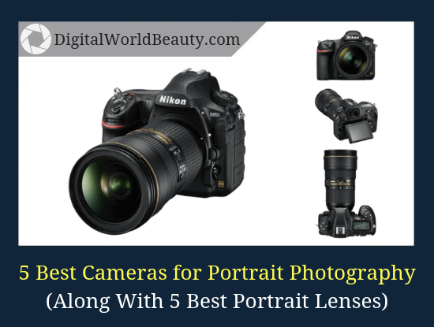
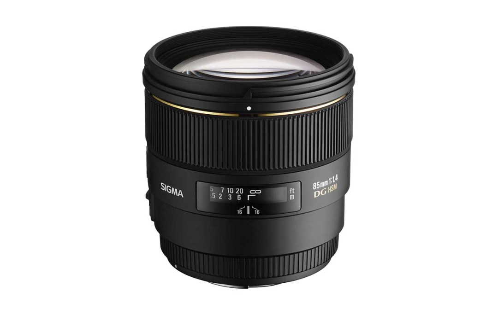
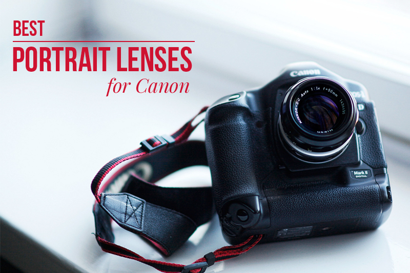
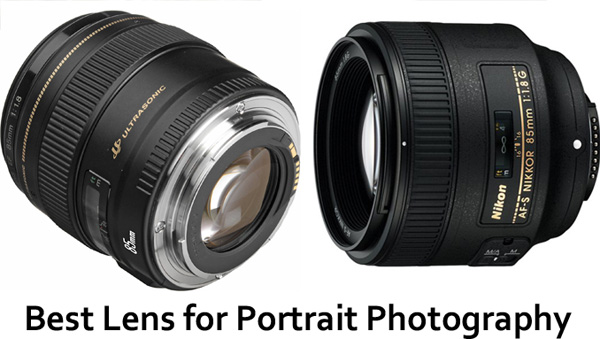
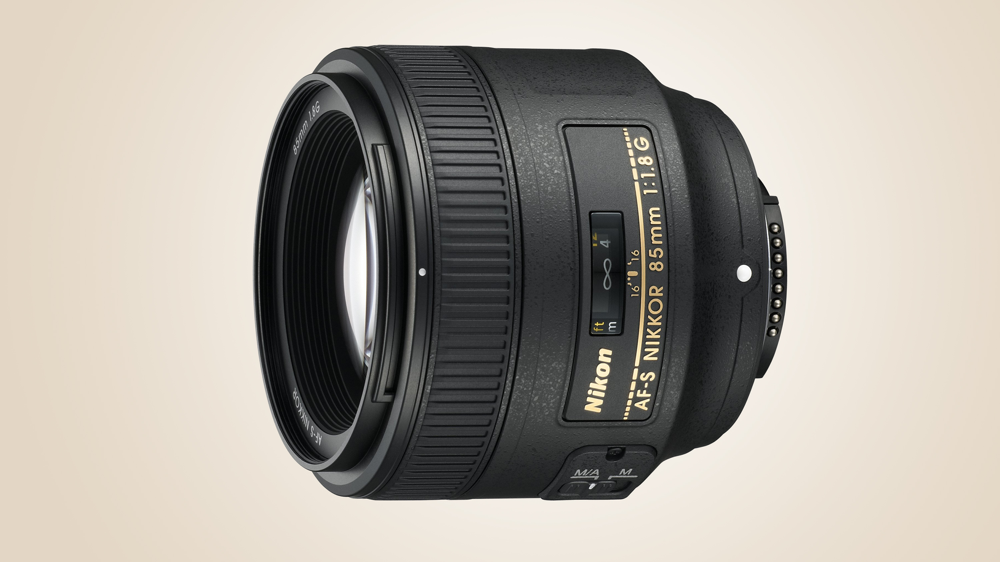

The 10 Best Canon and Nikon Lenses for Portrait Photography ...

Best Canon Lens for Portrait Photography - Ehab Photography

The A to Z of Photography: Telephoto | Canon lenses ...

Five Fantastic Prime Canon Lenses for Portrait Photography : The Friday ...

9 of the Best Canon-fit Lenses for Portraits - What Digital Camera

The 10 Best Canon and Nikon Lenses for Portrait Photography ....

Best Lenses for Portraits (Updated 2020)

Best Portrait Lenses – Camera News at Cameraegg

Best lenses for portrait photography

9 Best Lenses For Portrait Photography in All Price Range
- 
5 Best Cameras for Portrait Photography in 2019
- 
Best portrait prime lenses | Camera Jabber
- 
Top 5 Best Portrait Lenses For Canon | GlamFlame
- 
Best Lens for Portrait Photography - By One Click
The 10 Best Canon and Nikon Lenses for Portrait Photography ...
- 
Best lenses for portraits: 5 sensibly priced options tested – Top ...